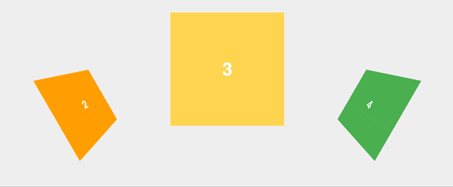
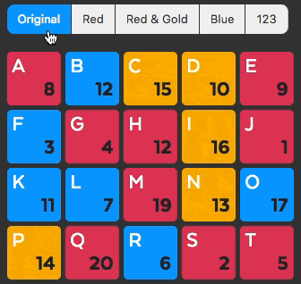

1a - Infinite Scroll full page demo
Hi! This demo will show off several key features of Infinite Scroll.
- Full page scrolling
- Changing browser URL and history. Watch how the URL changes as you scroll. Try refreshing on a changed page.
- Embeds like CodePens and Tweets have their
<script>s loaded and embeds rendered
The code looks like this:
<div class="article-feed">
<article class="article">...</article>
<article class="article">...</article>
...
</div>
<div class="scroller-status">
<div class="infinite-scroll-request loader-ellips">
...
</div>
<p class="infinite-scroll-last">End of content</p>
<p class="infinite-scroll-error">No more pages to load</p>
</div>
<p class="pagination">
<a class="pagination__next" href="page2.html">Next page</a>
</p>
$('.article-feed').infiniteScroll({
path: '.pagination__next',
append: '.article',
status: '.scroller-status',
hideNav: '.pagination',
});
1b - RGB Schemes logo in Computer Arts
As part of their March 2017 issue on VR, Computer Arts featured the RGB Schemes logo in a five page spread. I got to share the nitty gritty of how the project came together, working through the brief, and all the stuff that didn't make the cut. You can still grab a back issue online.


2a - RGB Schemes logo
2b - Masonry gets horizontalOrder
I've added Masonry's first new layout feature in years. horizontalOrder for Masonry and Isotope will position items in a Masonry staggered layout, but maintain left-to-right order. Previously, Masonry would discard horizontal order and position items in the closest position to the top. While the first row would have horizontal order: 1, 2, 3; subsequent rows would break the order: 5, 4, 6 ... 9, 7, 8.

Try out the demo on CodePen.
This feature has been hotly requested over a long time. For a while, I felt a horizontalOrder feature went against the purpose of Masonry. Masonry is supposed to mess up the horizontal order — that's what makes it Masonry. But recently, I've started relenting over these philosophical stances. If hundreds of people are asking for the same thing, maybe I shouldn't be so stubborn.
2c - Every vector 2016

Draplin-esque collage. Every vector made in 2016. Accepted, rejected, upcoming, or unused.
3a - Logo Pizza delivered

After shipping Flickity v2 thus wrapping 2016's huge development project, I didn't have it in me to write another line of code. I discussed my state of mind and motivation in this 3 min podcast.
Looking to change things up, I started making logos.
Man, I love logos. A little piece of imagery that represents the ideal you want your project to be — that's design magic right there. I've been able to work on some great logo projects, but I've been itching to do more. Rather than wait for projects to come my way, I gave myself a project of my own: design 50 logos. 50 logos in 30 days.
Fifty logos is a lot. At least one or two a day for an entire month. I tried pushing myself: exploring different styles, subjects, and techniques. It was like design boot camp: working all those muscles you never use.
3b - Some CodePens
3c - 365daysofmusic.com
3d - Holograms
4a - Huebee: 1-click color picker

I've made a new thing! Huebee is a one-click color picker. It displays a limited set of colors so users view all colors at a glance, make clear decisions, and select a color with a single click.
I made Huebee while I was working on Logo Pizza. I added a feature so you can choose your own custom colors for a logo. Looking at other color pickers, I couldn't find what I wanted.
Most color pickers are computer-centric. They are designed to display and select from every possible color available, nearly 17 million. But as a human, you only need a good selection: maybe 6 hues, with several shades, plus a couple grays.
Huebee is Metafizzy's 4th commercial library. The other libraries, Isotope, Flickity, and Packery, are all big, full-featured projects. Supporting them is a lot of work. Huebee mixes that up. Huebee is small and purpose-built — a welcome entry in the Metafizzy product line-up.
4b - Word is Flickity is good
Flickity has been getting good looks from some of the web's top developers.
To top it off, Darin Reid has extended Flickity's scroll behavior to do wild transformations with Flickity Transformer.

It's a delight to see Flickity getting the attention it deserves. But it didn't happen overnight. It's taken over a year to accrue this level of praise.
And let's not forget, Yeezy uses Flickity.
Flickity v2 released: groupCells, adaptiveHeight, parallax
Flickity is the best carousel library there is. Since its initial release last year, Flickity has grown to be hugely popular (thank you for making that happen!), being put to use in high-profile sites like Engadget, Artsy, and Kanye West's yeezysupply.com. With version 2, Flickity cements its status as the go-to carousel.
Version 2 is a huge upgrade. Let's take a look at some of its new features.
Groups cells together to act as individual slides with groupCells.
adaptiveHeight changes the height of carousel to fit height of selected slide.
Create parallax effects with the scroll event.
New tech gets chatter
My text editor of choice, TextMate, is old. Version 1 was released in 2004. Version 2 was announced in 2009 and has been in alpha & beta release since 2012. TextMate is old enough that a whole new generation of text editors have emerged and eclipsed it, most notably Sublime Text and Atom. They have built upon TextMate's successes and learned from its pain points. But I continue to use TextMate, and will continue to TextMate. Because TextMate works for me.
You don't hear about TextMate because TextMate is old. What would I tweet? Still using TextMate. Still good. TextMate's problems are well known. Its hacky solutions are documented. Most everything's been covered.
Meanwhile, Atom is entirely new. Its problems are new problems. When you find a solution, you might be the first one to discover it. That's pretty special. That's worth tweeting.
Seeing all the talk around Atom chips away at the confidence I have in TextMate. I feel like a stubborn luddite, clinging on to my 2005 flip-phone because I can see the numbers better. But that feeling, of missing-out because others are talking about it, is just a perceived social pressure, a herd behavior.
As a tech worker, I would like to think I am a highly rational being of pure logic. But I am just as susceptible to emotions as the rest of the muggles. So I recognize and tune-out hubbub and go with what I know. Because it continues to work, even though continuing to work isn't worthy of mention.
I use Sparrow for email. I write CSS in vanilla CSS. I write JavaScript in vanilla JavaScript (ES5 at that, kids). I haven't written a line of React.
If you use React and you like it: great. But if you don't use React (or whatever hot new tech), and you feel like you should: don't worry about it. You are perfectly okay to stick with what works for you. The more you use something, the clearer its pain points become. Try new technologies when you're ready to address those pain points. Don't feel obligated to change your workflow because of chatter. New tech gets chatter, but that doesn't make it any better.
In this very year of 2016, George R. R. Martin is writing the most popular work of fiction of this century on a 1980's DOS machine running WordStar 4.0. He blogs on LiveJournal.
Isotope v3 released: stagger in, IE8 out
Isotope v3 is Metafizzy's flagship product — the best JavaScript library for filtering and sorting dynamic layouts. It just got a whole lot better with new version 3. We dropped support for IE8 & 9, and Android 2.3. In doing so, we were able to shed 800 lines of code to make Isotope's filesize 20% smaller. We added a new option to stagger item transitions (finally).

Staggered transitions are a small change to animation behavior, but the result is subtly compelling. The reveal and hide animations appear more natural.
We simplified using Isotope with Webpack. Now your webpack.config.js only requires two aliases.
module.exports = {
resolve: {
alias: {
'masonry': 'masonry-layout',
'isotope': 'isotope-layout'
}
}
};
Best part: Isotope v3 is backward compatible with Isotope v2. Upgrade worry free. All your previous code will continue to work: jQuery plugin, events, methods, etc.
Open-source projects rarely get to version 2. I'm proud that Isotope has made it all the way to version 3.
We've been pushing out a bunch major version upgrades to our projects in 2016: Masonry v4, imagesLoaded v3, Packery v2, now Isotope v3. Next up: Flickity v2.
Packery v2 released
Packery is our fantastic bin-packing layout library, first released 3 years ago. Packery can do something no other library can: draggable grid layouts. But Packery's dragging behavior had plenty of quirks: random movement, potential gaps. It worked, but it wasn't pretty.
So we fixed it. Dragging with Packery version 2 has been completely re-tooled.
It feels much more intuitive. Now dragged items fit to their drop position. No more random movement. Packery v2 is perfect for draggable Masonry layouts and draggable dashboards. We put together a fun drag & drop puzzle to show it off (with a prize!).
What else is new? We dropped IE8 & 9 support for 25% smaller filesize, new shiftLayout method, simplified Webpack integration, and more. Plus completely refreshed docs with individualized demos and CodePens for every feature.
Already have a Packery v1 license? Keep an eye out for another email from us for a big discount to upgrade to v2.
Packery v2 is an awesome upgrade. Just one of several that will be happening in 2016. Up next: Isotope v3 and Flickity v2.
{kind=link}